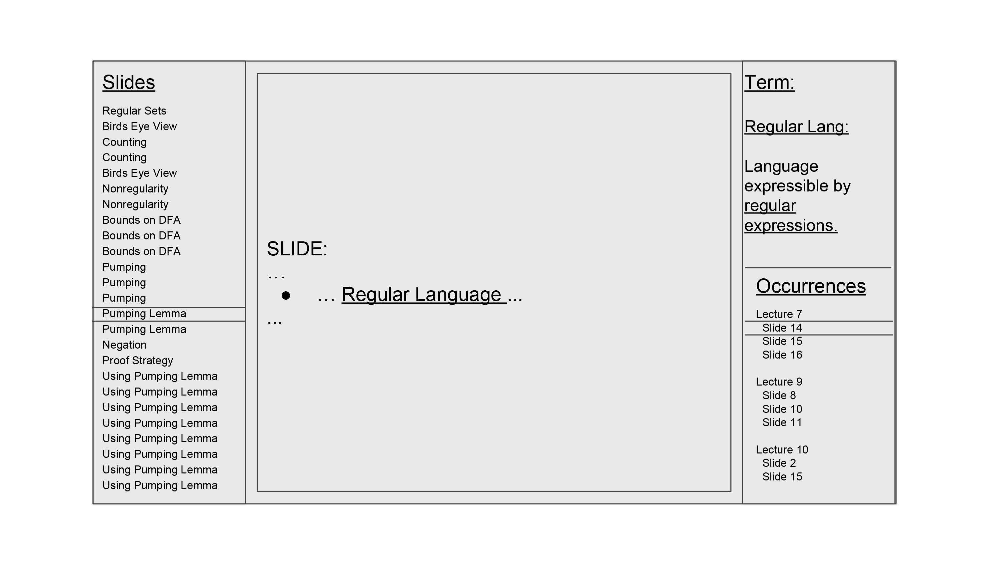

Domain:
Reviewing Lecture slides for studying and doing homework
Task:
To allow information mentioned across multiple slides and lectures to be accessible quickly, and from any starting source of a key term. To understand the use of regular languages in the pumping lemma proof, and allow the student to go across different lectures where regular languages are discussed.
Interface:

(no video, quite sick today)